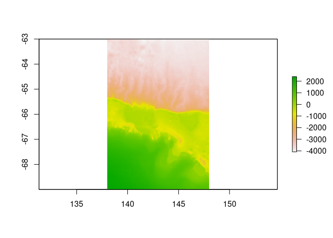

Blueant provides a set of data source configurations to use with the bowerbird package. These data sources are themed around Antarctic and Southern Ocean data, and include a range of oceanographic, meteorological, topographic, and other environmental data sets. Blueant will allow you to download data from these external data providers to your local file system, and to keep that data collection up to date.
Installing
options()
# Download and install blueant in R
install.packages("blueant", repos = c(SCAR = "https://scar.r-universe.dev",
CRAN = "https://cloud.r-project.org"))
## or
## install.packages("remotes") ## if needed
remotes::install_github("AustralianAntarcticDivision/blueant")Usage overview
Configuration
Build up a configuration by first defining global options such as the destination on your local file system. Usually you would choose this destination data directory to be a persistent location, suitable for a data library. For demonstration purposes here we’ll just use a temporary directory:
Add data sources from those provided by blueant. A summary of these sources is given at the end of this document. Here we’ll use the “George V bathymetry” data source as an example:
This data source is fairly small (around 200MB, see mysrc$collection_size). Be sure to check the collection_size parameter of your chosen data source before running the synchronization. Some of these collections are quite large (see the summary table at the bottom of this document).
Synchronization
Once the configuration has been defined and the data source added to it, we can run the sync process. We set verbose = TRUE here so that we see additional progress output:
status <- bb_sync(cf, verbose = TRUE)##
## Wed Aug 31 09:03:23 2022
## Synchronizing dataset: George V bathymetry
## Source URL c("https://public.services.aad.gov.au/datasets/science/GVdem_2008_netcdf/gvdem100m_v3.nc", "https://public.services.aad.gov.au/datasets/science/GVdem_2008_netcdf/gvdem250m_v3.nc", "https://public.services.aad.gov.au/datasets/science/GVdem_2008_netcdf/gvdem500m_v3.nc", "https://public.services.aad.gov.au/datasets/science/GVdem_2008_netcdf/gvdem1000m_v3.nc")
## --------------------------------------------------------------------------------------------
##
## this dataset path is: /tmp/data/public.services.aad.gov.au/datasets/science/GVdem_2008_netcdf
## downloading file 1 of 4: https://public.services.aad.gov.au/datasets/science/GVdem_2008_netcdf/gvdem100m_v3.nc ... done.
## downloading file 2 of 4: https://public.services.aad.gov.au/datasets/science/GVdem_2008_netcdf/gvdem250m_v3.nc ... done.
## downloading file 3 of 4: https://public.services.aad.gov.au/datasets/science/GVdem_2008_netcdf/gvdem500m_v3.nc ... done.
## downloading file 4 of 4: https://public.services.aad.gov.au/datasets/science/GVdem_2008_netcdf/gvdem1000m_v3.nc ... done.
##
## Wed Aug 31 09:04:41 2022 dataset synchronization complete: George V bathymetryCongratulations! You now have your own local copy of this data set. The files in this data set have been stored in a data-source-specific subdirectory of our local file root, with details given by the returned status object:
myfiles <- status$files[[1]]
myfiles
## # A tibble: 4 × 3
## url
## <chr>
## 1 https://public.services.aad.gov.au/datasets/science/GVdem_2008_netcdf/gvdem10…
## 2 https://public.services.aad.gov.au/datasets/science/GVdem_2008_netcdf/gvdem25…
## 3 https://public.services.aad.gov.au/datasets/science/GVdem_2008_netcdf/gvdem50…
## 4 https://public.services.aad.gov.au/datasets/science/GVdem_2008_netcdf/gvdem10…
## file
## <chr>
## 1 /tmp/data/public.services.aad.gov.au/datasets/science/GVdem_2008_netcdf/gvdem…
## 2 /tmp/data/public.services.aad.gov.au/datasets/science/GVdem_2008_netcdf/gvdem…
## 3 /tmp/data/public.services.aad.gov.au/datasets/science/GVdem_2008_netcdf/gvdem…
## 4 /tmp/data/public.services.aad.gov.au/datasets/science/GVdem_2008_netcdf/gvdem…
## note
## <chr>
## 1 downloaded
## 2 downloaded
## 3 downloaded
## 4 downloadedThe data sources provided by blueant can be read, manipulated, and plotted using a range of other R packages, including RAADTools and raster. In this case the data files are netcdf, which can be read by raster:

Nuances
Choosing a data directory
It’s up to you where you want your data collection kept, and to provide that location to bowerbird. A common use case for bowerbird is maintaining a central data collection for multiple users, in which case that location is likely to be some sort of networked file share. However, if you are keeping a collection for your own use, you might like to look at https://github.com/r-lib/rappdirs to help find a suitable directory location.
Authentication
Some data providers require users to log in. These are indicated by the authentication_note column in the configuration table. For these sources, you will need to provide your user name and password, e.g.:
src <- sources(name="CMEMS global gridded SSH reprocessed (1993-ongoing)")
src$user <- "yourusername"
src$password <- "yourpassword"
cf <- bb_add(cf, src)
## or, using the pipe operator
mysrc <- bb_example_sources("CMEMS global gridded SSH reprocessed (1993-ongoing)") %>%
bb_modify_source(user = "yourusername", password = "yourpassword")
cf <- cf %>% bb_add(mysrc)Writing and modifying data sources
The bowerbird documentation is a good place to start to find out more about writing your own data sources or modifying existing ones.
Reducing download sizes
Sometimes you might only want part of a data collection. Perhaps you only want a few years from a long-term collection, or perhaps the data are provided in multiple formats and you only need one. If the data source uses the bb_handler_rget method, you can restrict what is downloaded by modifying the arguments passed through the data source’s method parameter, particularly the accept_follow, reject_follow, accept_download, and reject_download options.
For example, the CERSAT SSM/I sea ice concentration data are arranged in yearly directories, and so it is fairly easy to restrict ourselves to, say, only the 2017 data:
mysrc <- sources("CERSAT SSM/I sea ice concentration")
## first make sure that the data source doesn't already have an accept_follow parameter defined
"accept_follow" %in% names(mysrc$method[[1]])
## nope, so we can safely go ahead and impose our own
mysrc$method[[1]]$accept_follow <- "/2017"
cf <- cf %>% bb_add(mysrc)Alternatively, for data sources that are divided into subdirectories, one could replace the whole-data-source source_url with one or more that point to specific yearly (or other) subdirectories. For example, the default source_url for the CERSAT sea ice data above is ftp://ftp.ifremer.fr/ifremer/cersat/products/gridded/psi-concentration/data/antarctic/daily/netcdf/ (which has yearly subdirectories). So e.g. for 2016 and 2017 data we could do:
mysrc <- sources("CERSAT SSM/I sea ice concentration")
mysrc$source_url[[1]] <- c(
"ftp://ftp.ifremer.fr/ifremer/cersat/products/gridded/psi-concentration/data/antarctic/daily/netcdf/2016/",
"ftp://ftp.ifremer.fr/ifremer/cersat/products/gridded/psi-concentration/data/antarctic/daily/netcdf/2017/")
cf <- cf %>% bb_add(mysrc)Data source summary
These are the data source definitions that are provided as part of the blueant package.
Data group: Altimetry
CMEMS global gridded SSH near-real-time
For the Global Ocean - Multimission altimeter satellite gridded sea surface heights and derived variables computed with respect to a twenty-year mean. Previously distributed by Aviso+, no change in the scientific content. All the missions are homogenized with respect to a reference mission which is currently Jason-3. The acquisition of various altimeter data is a few days at most. VARIABLES
sea_surface_height_above_sea_level (SSH)
surface_geostrophic_eastward_sea_water_velocity_assuming_sea_level_for_geoid (UVG)
surface_geostrophic_northward_sea_water_velocity_assuming_sea_level_for_geoid (UVG)
sea_surface_height_above_geoid (SSH)
surface_geostrophic_eastward_sea_water_velocity (UVG)
surface_geostrophic_northward_sea_water_velocity (UVG)
Authentication note: Copernicus Marine login required, see http://marine.copernicus.eu/services-portfolio/register-now/
Approximate size: 3 GB
Documentation link: http://marine.copernicus.eu/services-portfolio/access-to-products/?option=com_csw&view=details&product_id=SEALEVEL_GLO_PHY_L4_NRT_OBSERVATIONS_008_046
CMEMS global gridded SSH reprocessed (1993-ongoing)
For the Global Ocean - Multimission altimeter satellite gridded sea surface heights and derived variables computed with respect to a twenty-year mean. Previously distributed by Aviso+, no change in the scientific content. All the missions are homogenized with respect to a reference mission which is currently OSTM/Jason-2. VARIABLES
sea_surface_height_above_sea_level (SSH)
surface_geostrophic_eastward_sea_water_velocity_assuming_sea_level_for_geoid (UVG)
surface_geostrophic_northward_sea_water_velocity_assuming_sea_level_for_geoid (UVG)
sea_surface_height_above_geoid (SSH)
surface_geostrophic_eastward_sea_water_velocity (UVG)
surface_geostrophic_northward_sea_water_velocity (UVG)
Authentication note: Copernicus Marine login required, see http://marine.copernicus.eu/services-portfolio/register-now/
Approximate size: 310 GB
Documentation link: https://resources.marine.copernicus.eu/?option=com_csw&view=details&product_id=SEALEVEL_GLO_PHY_L4_REP_OBSERVATIONS_008_047
CNES-CLS2013 Mean Dynamic Topography
CNES-CLS2013 Mean dynamic topography over the 1993-2012 period of the sea surface height above geoid. The MDT_CNES-CLS13 is an estimate of the ocean MDT for the 1993-2012 period. Since April 2014 (Duacs 2014, v15.0 version), the Ssalto/Duacs (M)SLA products are computed relative to 1993-2012 period that is consistent with this new MDT CNES-CLS13. Based on 2 years of GOCE data, 7 years of GRACE data, and 20 years of altimetry and in-situ data (hydrologic and drifters data).
Authentication note: AVISO login required, see https://www.aviso.altimetry.fr/en/data/data-access/endatadata-accessregistration-form.html
Approximate size: 0.1 GB
Documentation link: https://www.aviso.altimetry.fr/en/data/products/auxiliary-products/mdt.html
Delayed-time finite size Lyapunov exponents
The maps of Backward-in-time, Finite-Size Lyapunov Exponents (FSLEs) and Orientations of associated eigenvectors are computed over 21-year altimetry period and over global ocean within the SALP/Cnes project in collaboration with CLS, LOcean and CTOH. These products provide the exponential rate of separation of particle trajectories initialized nearby and advected by altimetry velocities. FSLEs highlight the transport barriers that control the horizontal exchange of water in and out of eddy cores.
Authentication note: AVISO login required, see https://www.aviso.altimetry.fr/en/data/data-access/endatadata-accessregistration-form.html
Approximate size: 1200 GB
Documentation link: https://www.aviso.altimetry.fr/en/data/products/value-added-products/fsle-finite-size-lyapunov-exponents/fsle-description.html
Gridded Sea Level Heights and geostrophic currents - Antarctic Ocean
Experimental Ssalto/Duacs gridded multimission altimeter products dedicated to Antarctic Ocean. This dataset is one of the experimental products which are available on the SSALTO/DUACS experimental products. Multimission sea level heights computed with respect to a twenty-year mean and associated geostrophic current anomalies. The formal error is also included.
Authentication note: AVISO login required, see https://www.aviso.altimetry.fr/en/data/data-access/endatadata-accessregistration-form.html
Approximate size: 4.5 GB
Documentation link: https://www.aviso.altimetry.fr/en/data/products/sea-surface-height-products/regional/antarctic-ocean-gridded-sea-level-heights.html
Near-real-time finite size Lyapunov exponents
The maps of Backward-in-time, Finite-Size Lyapunov Exponents (FSLEs) and Orientations of associated eigenvectors are computed over 21-year altimetry period and over global ocean within the SALP/Cnes project in collaboration with CLS, LOcean and CTOH. These products provide the exponential rate of separation of particle trajectories initialized nearby and advected by altimetry velocities. FSLEs highlight the transport barriers that control the horizontal exchange of water in and out of eddy cores.
Authentication note: AVISO login required, see https://www.aviso.altimetry.fr/en/data/data-access/endatadata-accessregistration-form.html
Approximate size: 100 GB
Documentation link: https://www.aviso.altimetry.fr/en/data/products/value-added-products/fsle-finite-size-lyapunov-exponents/fsle-description.html
WAVERYS Global Ocean Waves Reanalysis
GLOBAL_REANALYSIS_WAV_001_032 for the global wave reanalysis describing past sea states since years 1993. This product also bears the name of WAVERYS within the GLO-HR MFC, for correspondence to other global multi-year products like GLORYS, BIORYS, etc. The core of WAVERYS is based on the MFWAM model, a third generation wave model that calculates the wave spectrum, i.e. the distribution of sea state energy in frequency and direction on a 1/5-degree irregular grid. Average wave quantities derived from this wave spectrum, such as the SWH (significant wave height) or the average wave period, are delivered on a regular 1/5-degree grid with a 3h time step. The wave spectrum is discretized into 30 frequencies obtained from a geometric sequence of first member 0.035 Hz and a reason 7.5. WAVERYS takes into account oceanic currents from the GLORYS12 physical ocean reanalysis and assimilates significant wave height observed from historical altimetry missions and directional wave spectra from Sentinel 1 SAR from 2017 onwards.
Authentication note: Copernicus Marine login required, see http://marine.copernicus.eu/services-portfolio/register-now/
Approximate size: 1100 GB
Documentation link: https://resources.marine.copernicus.eu/?option=com_csw&view=details&product_id=GLOBAL_REANALYSIS_WAV_001_032
Data group: Biology
CMEMS Global ocean low and mid trophic levels biomass content hindcast
The Low and Mid-Trophic Levels (LMTL) reanalysis for global ocean is produced at CLS on behalf of Global Ocean Marine Forecasting Center. It provides 2D fields of biomass content of zooplankton and six groups of micronekton. It uses the LMTL component of [CLS dynamical population model]](http://www.seapodym.eu/). No data assimilation has been done. This product also contains forcing data: net primary production, euphotic depth, depth of each pelagic layers zooplankton and micronekton inhabit, average temperature and currents over pelagic layers.
Authentication note: Copernicus Marine login required, see http://marine.copernicus.eu/services-portfolio/register-now/
Approximate size: not specified
Documentation link: https://resources.marine.copernicus.eu/product-detail/GLOBAL_MULTIYEAR_BGC_001_033/INFORMATION
Myctobase
The global importance of mesopelagic fish is increasingly recognised, but they remain poorly studied. This is particularly true in the Southern Ocean, where mesopelagic fishes are both key predators and prey, but where the remote environment makes sampling them challenging. Despite this, multiple national Antarctic research programs have undertaken regional sampling of mesopelagic fish over several decades. However, data are dispersed, and sampling methodologies often differ precluding comparisons and limiting synthetic analyses. Here, we have collated and standardised existing survey data of mesopelagic fishes into a circumpolar dataset called Myctobase. To date, Myctobase holds 17,491 occurrence and 11,190 abundance records from 4780 net hauls from 72 different research cruises. Data include trait-based information of individuals including standard length, weight and life-stage. Data span across 37 years from 1991 to 2019. Detailed metadata has also been provided for each sampling event including the date, time, position (latitude, longitude, and depth), sampling protocol, net type, net mesh size, tow speed, volume filtered and haul type (routine, target, random).
The dataset is comprised of three comma-separated files. The first file (event.csv) describes the survey methodology. The second file (groupOccurrence.csv) contains the catch data linked to the survey methodology by an event ID. The final file (individualOccurrence.csv) contains measurements of individuals. Each row contains the event and occurrence ID, which links each measurement to the first and second file. See associated metadata record for definitions and units for each variable in ‘definitions.xlsx’.
The final dataset was subject to quality control and validation processes. Entries with ambiguous or incomplete records were identified with a ‘0’ in the column labelled ‘validation’ (event.csv) and a description of the missing data can be found in the proceeding column labelled ‘validationDescription’.
The taxonomic name for each individual was verified against the World Register of Marine Species (http://www.marinespecies.org/).
Approximate size: 0.009 GB
Documentation link: https://doi.org/10.5281/zenodo.6809070
SCAR RAATD data filtered
Tracking data from 17 species of Antarctic and subantarctic seabirds, marine mammals, and penguins. This data set is the ‘filtered’ version of the data files. These files contain position estimates that have been processed using a state-space model in order to estimate locations at regular time intervals. For technical details of the filtering process, consult the data paper. The filtering code can be found in the https://github.com/SCAR/RAATD repository.
Approximate size: 1.2 GB
Documentation link: https://doi.org/10.4225/15/5afcadad6c130
SCAR RAATD data standardised
Tracking data from 17 species of Antarctic and subantarctic seabirds, marine mammals, and penguins. This data set is the ‘standardized’ version of the data files. These files contain position estimates as provided by the original data collectors (generally, raw Argos or GPS locations, or estimated GLS locations). Original data files have been converted to a common format and quality-checking applied, but have not been further filtered or interpolated.
Approximate size: 0.3 GB
Documentation link: https://doi.org/10.4225/15/5afcb927e8162
SCAR RAATD model outputs
Single-species habitat importance maps for 17 species of Antarctic and subantarctic seabirds, marine mammals, and penguins. The data also include the integrated maps that incorporate all species (weighted by colony size, and unweighted)
Approximate size: 0.3 GB
Documentation link: https://doi.org/10.26179/5d64b361ca8ec
SEAPODYM Zooplankton & Micronekton weekly potential and biomass distribution
The zooplankton & micronekton biomass distributions are outputs of the SEAPODYM Low and Mid-Trophic Levels (LMTL) model (Lehodey et al., 1998; 2010; 2015). SEAPODYM-LMTL model simulates the spatial and temporal dynamics of six micronekton and one zooplankton functional groups between the sea surface and ~1000m. The model is driven by ocean temperature, horizontal currents, primary production and euphotic depth. Primary production can be outputs from biogeochemical models or derived from ocean color satellite data using empirical optical models (e.g., Behrenfeld and Falkowski 1997).
Authentication note: Requires registration, see http://www.mesopp.eu/data/registration/
Approximate size: not specified
Documentation link: http://www.mesopp.eu/catalogue/seapodym-zooplankton-micronekton-weekly-potential-and-biomass-distribution-2016/#dataset
Southern Ocean Continuous Plankton Recorder
Continuous Plankton Recorder (CPR) surveys from the Southern Ocean. Zooplankton species, numbers and abundance data are recorded on a continuous basis while vessels are in transit
Approximate size: 0.1 GB
Documentation link: https://doi.org/10.26179/fbfd-0828
Data group: Meteorological
Antarctic Mesoscale Prediction System grib files
The Antarctic Mesoscale Prediction System - AMPS - is an experimental, real-time numerical weather prediction capability that provides support for the United States Antarctic Program, Antarctic science, and international Antarctic efforts.
Approximate size: not specified
Documentation link: http://www2.mmm.ucar.edu/rt/amps/
Data group: Modelling
Southern Ocean marine environmental data
A collection of gridded marine environmental data layers suitable for use in Southern Ocean species distribution modelling. All environmental layers have been generated at a spatial resolution of 0.1 degrees, covering the Southern Ocean extent (80 degrees S - 45 degrees S, -180 - 180 degrees). The layers include information relating to bathymetry, sea ice, ocean currents, primary production, particulate organic carbon, and other oceanographic data.
Approximate size: 0.1 GB
Documentation link: https://doi.org/10.26179/5b8f30e30d4f3
Data group: Ocean colour
Oceandata MODIS Aqua Level-3 binned daily RRS
Daily remote-sensing reflectance from MODIS Aqua. RRS is used to produce standard ocean colour products such as chlorophyll concentration
Authentication note: Requires Earthdata login, see https://urs.earthdata.nasa.gov/. Note that you will also need to authorize the application ‘OB.DAAC Data Access’ (see ‘My Applications’ at https://urs.earthdata.nasa.gov/profile)
Approximate size: 800 GB
Documentation link: http://oceancolor.gsfc.nasa.gov/
Oceandata MODIS Aqua Level-3 mapped daily 4km chl-a
Daily remote-sensing chlorophyll-a from the MODIS Aqua satellite at 4km spatial resolution
Authentication note: Requires Earthdata login, see https://urs.earthdata.nasa.gov/. Note that you will also need to authorize the application ‘OB.DAAC Data Access’ (see ‘My Applications’ at https://urs.earthdata.nasa.gov/profile)
Approximate size: 40 GB
Documentation link: http://oceancolor.gsfc.nasa.gov/
Oceandata MODIS Aqua Level-3 mapped monthly 9km chl-a
Monthly remote-sensing chlorophyll-a from the MODIS Aqua satellite at 9km spatial resolution
Authentication note: Requires Earthdata login, see https://urs.earthdata.nasa.gov/. Note that you will also need to authorize the application ‘OB.DAAC Data Access’ (see ‘My Applications’ at https://urs.earthdata.nasa.gov/profile)
Approximate size: 8 GB
Documentation link: http://oceancolor.gsfc.nasa.gov/
Oceandata SeaWiFS Level-3 binned daily RRS
Daily remote-sensing reflectance from SeaWiFS. RRS is used to produce standard ocean colour products such as chlorophyll concentration
Authentication note: Requires Earthdata login, see https://urs.earthdata.nasa.gov/. Note that you will also need to authorize the application ‘OB.DAAC Data Access’ (see ‘My Applications’ at https://urs.earthdata.nasa.gov/profile)
Approximate size: 130 GB
Documentation link: http://oceancolor.gsfc.nasa.gov/
Oceandata SeaWiFS Level-3 mapped monthly 9km chl-a
Monthly remote-sensing chlorophyll-a from the SeaWiFS satellite at 9km spatial resolution
Authentication note: Requires Earthdata login, see https://urs.earthdata.nasa.gov/. Note that you will also need to authorize the application ‘OB.DAAC Data Access’ (see ‘My Applications’ at https://urs.earthdata.nasa.gov/profile)
Approximate size: 7.2 GB
Documentation link: http://oceancolor.gsfc.nasa.gov/
Oceandata VIIRS Level-3 binned daily RRS
Daily remote-sensing reflectance from VIIRS. RRS is used to produce standard ocean colour products such as chlorophyll concentration
Authentication note: Requires Earthdata login, see https://urs.earthdata.nasa.gov/. Note that you will also need to authorize the application ‘OB.DAAC Data Access’ (see ‘My Applications’ at https://urs.earthdata.nasa.gov/profile)
Approximate size: 180 GB
Documentation link: http://oceancolor.gsfc.nasa.gov/
Oceandata VIIRS Level-3 mapped 32-day 9km chl-a
Rolling 32-day composite remote-sensing chlorophyll-a from the VIIRS satellite at 9km spatial resolution
Authentication note: Requires Earthdata login, see https://urs.earthdata.nasa.gov/. Note that you will also need to authorize the application ‘OB.DAAC Data Access’ (see ‘My Applications’ at https://urs.earthdata.nasa.gov/profile)
Approximate size: 4 GB
Documentation link: http://oceancolor.gsfc.nasa.gov/
Oceandata VIIRS Level-3 mapped daily 4km chl-a
Daily remote-sensing chlorophyll-a from the VIIRS satellite at 4km spatial resolution
Authentication note: Requires Earthdata login, see https://urs.earthdata.nasa.gov/. Note that you will also need to authorize the application ‘OB.DAAC Data Access’ (see ‘My Applications’ at https://urs.earthdata.nasa.gov/profile)
Approximate size: 50 GB
Documentation link: http://oceancolor.gsfc.nasa.gov/
Oceandata VIIRS Level-3 mapped monthly 9km chl-a
Monthly remote-sensing chlorophyll-a from the VIIRS satellite at 9km spatial resolution
Authentication note: Requires Earthdata login, see https://urs.earthdata.nasa.gov/. Note that you will also need to authorize the application ‘OB.DAAC Data Access’ (see ‘My Applications’ at https://urs.earthdata.nasa.gov/profile)
Approximate size: 1 GB
Documentation link: http://oceancolor.gsfc.nasa.gov/
Oceandata VIIRS Level-3 mapped seasonal 9km chl-a
Seasonal remote-sensing chlorophyll-a from the VIIRS satellite at 9km spatial resolution
Authentication note: Requires Earthdata login, see https://urs.earthdata.nasa.gov/. Note that you will also need to authorize the application ‘OB.DAAC Data Access’ (see ‘My Applications’ at https://urs.earthdata.nasa.gov/profile)
Approximate size: 0.5 GB
Documentation link: http://oceancolor.gsfc.nasa.gov/
Southern Ocean summer chlorophyll-a climatology (Johnson)
Climatological summer chlorophyll-a layer for the Southern Ocean south of 40S, following the OC3M algorithm of Johnson et al. (2013)
Approximate size: 0.05 GB
Documentation link: https://doi.org/10.4225/15/5906b48f70bf9
Data group: Oceanographic
Argo ocean basin data (USGODAE)
Argo float data from the Global Data Access Centre in Monterey, USA (US Global Ocean Data Assimilation Experiment). These are multi-profile netcdf files divided by ocean basin.
Approximate size: not specified
Documentation link: http://www.argodatamgt.org/Documentation
Argo profile data
Argo profile data from https://www.usgodae.org/ftp/outgoing/argo/.
Approximate size: not specified
Documentation link: http://www.argodatamgt.org/Documentation
Argo profile data (USGODAE)
Argo profile data from the Global Data Access Centre in Monterey, USA (US Global Ocean Data Assimilation Experiment).
Approximate size: not specified
Documentation link: http://www.argodatamgt.org/Documentation
CSIRO Atlas of Regional Seas 2009
CARS is a digital climatology, or atlas of seasonal ocean water properties.
Approximate size: 2.8 GB
Documentation link: http://www.marine.csiro.au/~dunn/cars2009/
Effects of Sound on the Marine Environment
ESME uses publically available environmental data sources that provide detailed information about the ocean, in the form of four primary databases supplied by the Oceanographic and Atmospheric Master Library (OAML). (1) Bottom Sediment Type (BST) v 2.0 : This database provides information on the type of sediment on the ocean bottom, which affects its acoustic reflectivity. Available data resolutions: 2 min, 0.1 min. (2) Digital Bathymetry Database (DBDB) v 5.4 : This database provides information on the depth of the water column. Available data resolutions: 2 min, 1 min, .5 min, .1 min, 0.05 min. (3) Generalized Digital Environment Model (GDEM) v 3.0 : This database provides water temperature and water salinity data for a selected month or months of time, which is used to calculate the changes in the speed of sound in water. Available data resolution: 15 min. (4) Surface Marine Gridded Climatology (SMGC) v 2.0 : This database provides wind speed data for a selected month or months. Wind speed, and consequently surface roughness and wave height, affect the surface’s acoustic reflectivity. Available data resolution: 60 min.
Approximate size: 5 GB
Documentation link: https://esme.bu.edu/index.shtml
World Ocean Atlas 2009
World Ocean Atlas 2009 (WOA09) is a set of objectively analyzed (1 degree grid) climatological fields of in situ temperature, salinity, dissolved oxygen, Apparent Oxygen Utilization (AOU), percent oxygen saturation, phosphate, silicate, and nitrate at standard depth levels for annual, seasonal, and monthly compositing periods for the World Ocean. It also includes associated statistical fields of observed oceanographic profile data interpolated to standard depth levels on both 1 degree and 5 degree grids
Approximate size: 6 GB
Documentation link: http://www.nodc.noaa.gov/OC5/WOA09/pr_woa09.html
World Ocean Atlas 2013 V2
World Ocean Atlas 2013 version 2 (WOA13 V2) is a set of objectively analyzed (1 degree grid) climatological fields of in situ temperature, salinity, dissolved oxygen, Apparent Oxygen Utilization (AOU), percent oxygen saturation, phosphate, silicate, and nitrate at standard depth levels for annual, seasonal, and monthly compositing periods for the World Ocean. It also includes associated statistical fields of observed oceanographic profile data interpolated to standard depth levels on 5 degree, 1 degree, and 0.25 degree grids
Approximate size: 57 GB
Documentation link: https://www.nodc.noaa.gov/OC5/woa13/
Data group: Reanalysis
CCMP Wind Product V2
The Cross-Calibrated Multi-Platform (CCMP) gridded surface vector winds are produced using satellite, moored buoy, and model wind data, and are a Level-3 ocean vector wind analysis product. The V2 CCMP processing combines Version-7 RSS radiometer wind speeds, QuikSCAT and ASCAT scatterometer wind vectors, moored buoy wind data, and ERA-Interim model wind fields using a Variational Analysis Method (VAM) to produce four maps daily of 0.25 degree gridded vector winds
Approximate size: 120 GB
Documentation link: https://www.remss.com/measurements/ccmp/
NCEP-DOE Reanalysis 1 monthly averages
The NCEP/NCAR Reanalysis 1 project is using a state-of-the-art analysis/forecast system to perform data assimilation using past data from 1948 to the present. Monthly averages are calculated from the 6-hourly model output.
Approximate size: 2 GB
Documentation link: https://www.esrl.noaa.gov/psd/data/gridded/data.ncep.reanalysis.html
NCEP-DOE Reanalysis 2 monthly averages
NCEP-DOE Reanalysis 2 is an improved version of the NCEP Reanalysis I model that fixed errors and updated paramterizations of of physical processes. Monthly averages are calculated from the 6-hourly model output.
Approximate size: 2 GB
Documentation link: http://www.esrl.noaa.gov/psd/data/gridded/data.ncep.reanalysis2.html
Data group: Sea ice
Artist AMSR-E sea ice concentration
Passive microwave estimates of daily sea ice concentration at 6.25km spatial resolution, from 19-Jun-2002 to 2-Oct-2011.
Approximate size: 25 GB
Documentation link: https://icdc.cen.uni-hamburg.de/1/daten/cryosphere/seaiceconcentration-asi-amsre.html
Artist AMSR-E supporting files
Grids and other support files for Artist AMSR-E passive microwave sea ice data.
Approximate size: 0.01 GB
Documentation link: http://icdc.zmaw.de/1/daten/cryosphere/seaiceconcentration-asi-amsre.html
Artist AMSR2 near-real-time 3.125km sea ice concentration
Near-real-time passive microwave estimates of daily sea ice concentration at 3.125km spatial resolution (full Antarctic coverage).
Approximate size: 100 GB
Documentation link: https://seaice.uni-bremen.de/sea-ice-concentration/
Artist AMSR2 near-real-time sea ice concentration
Near-real-time passive microwave estimates of daily sea ice concentration at 6.25km spatial resolution, from 24-July-2012 to present.
Approximate size: 11 GB
Documentation link: https://seaice.uni-bremen.de/sea-ice-concentration/
Artist AMSR2 supporting files
Grids and landmasks for Artist AMSR2 passive microwave sea ice data.
Approximate size: 0.02 GB
Documentation link: https://seaice.uni-bremen.de/sea-ice-concentration/
CERSAT SSM/I sea ice concentration
Passive microwave sea ice concentration data at 12.5km resolution, 3-Dec-1991 to present
Approximate size: 2.5 GB
Documentation link: http://cersat.ifremer.fr/data/tools-and-services/quicklooks/sea-ice/ssm-i-sea-ice-concentration-maps
CERSAT SSM/I sea ice concentration supporting files
Grids for the CERSAT SSM/I sea ice concentration data.
Approximate size: 0.01 GB
Documentation link: http://cersat.ifremer.fr/data/tools-and-services/quicklooks/sea-ice/ssm-i-sea-ice-concentration-maps
Circum-Antarctic landfast sea ice extent, 2000-2018 - version 2.2
This dataset (provided as a series of CF-compatible netcdf file) consists of 432 consecutive maps of Antarctic landfast sea ice, derived from NASA MODIS imagery. There are 24 maps per year, spanning the 18 year period from March 2000 to Feb 2018. The data are provided in a polar stereographic projection with a latitude of true scale at 70 S (i.e., to maintain compatibility with the NSIDC polar stereographic projection).
Approximate size: 8 GB
Documentation link: https://doi.org/10.26179/5d267d1ceb60c
MODIS Composite Based Maps of East Antarctic Fast Ice Coverage
Maps of East Antarctic landfast sea-ice extent, generated from approx. 250,000 1 km visible/thermal infrared cloud-free MODIS composite imagery (augmented with AMSR-E 6.25-km sea-ice concentration composite imagery when required). Coverage from 2000-03-01 to 2008-12-31
Approximate size: 0.4 GB
Documentation link: https://doi.org/10.4225/15/5667AC726B224
National Ice Center Antarctic daily sea ice charts
The USNIC Daily Ice Edge product depicts the daily sea ice pack in red (8-10/10ths or greater of sea ice), and the Marginal Ice Zone (MIZ) in yellow. The marginal ice zone is the transition between the open ocean (ice free) and pack ice. The MIZ is very dynamic and affects the air-ocean heat transport, as well as being a significant factor in navigational safety. The daily ice edge is analyzed by sea ice experts using multiple sources of near real time satellite data, derived satellite products, buoy data, weather, and analyst interpretation of current sea ice conditions. The product is a current depiction of the location of the ice edge vice a satellite derived ice edge product.
Approximate size: not specified
Documentation link: https://usicecenter.gov/Products/AntarcHome
Nimbus Ice Edge Points from Nimbus Visible Imagery
This data set (NmIcEdg2) estimates the location of the North and South Pole sea ice edges at various times during the mid to late 1960s, based on recovered Nimbus 1 (1964), Nimbus 2 (1966), and Nimbus 3 (1969) visible imagery.
Authentication note: Requires Earthdata login, see https://urs.earthdata.nasa.gov/. Note that you will also need to authorize the application ‘NSIDC_DATAPOOL_OPS’ (see ‘My Applications’ at https://urs.earthdata.nasa.gov/profile)
Approximate size: 0.1 GB
Documentation link: http://nsidc.org/data/nmicedg2/
NSIDC passive microwave supporting files
Grids and other support files for NSIDC passive microwave sea ice data.
Approximate size: 0.1 GB
Documentation link: http://nsidc.org/data/nsidc-0051.html
NSIDC SMMR-SSM/I Nasateam near-real-time sea ice concentration
Near-real-time passive microwave estimates of sea ice concentration at 25km, daily resolution. For older, quality-controlled data see the “NSIDC SMMR-SSM/I Nasateam sea ice concentration” source
Approximate size: 0.6 GB
Documentation link: http://nsidc.org/data/nsidc-0081.html
NSIDC SMMR-SSM/I Nasateam sea ice concentration
Passive microwave estimates of sea ice concentration at 25km spatial resolution. Daily and monthly resolution, available from 1-Oct-1978 to present. Data undergo a quality checking process and are updated annually. More recent data if required are available via the “NSIDC SMMR-SSM/I Nasateam near-real-time sea ice concentration” source.
Authentication note: Requires Earthdata login, see https://urs.earthdata.nasa.gov/. Note that you will also need to authorize the application ‘NSIDC_DATAPOOL_OPS’ (see ‘My Applications’ at https://urs.earthdata.nasa.gov/profile)
Approximate size: 10 GB
Documentation link: http://nsidc.org/data/nsidc-0051.html
Polarview Sentinel-1 imagery
Sentinel-1 imagery from polarview.aq
Approximate size: not specified
Documentation link: https://www.polarview.aq/
Sea ice lead climatologies
Long-term relative sea ice lead frequencies for the Arctic (November - April 2002/03 - 2018/19) and Antarctic (April - September 2003 - 2019). Ice surface temperature data (MYD/MOD29 col. 6) from the Moderate-Resolution Imaging Spectroradiometer are used to derive daily observations of sea ice leads in both polar regions. Sea ice leads are defined as significant local surface temperature anomalies and they are automatically identified during a two-stage process, including 1) the tile-based retrieval of potential sea ice leads and 2) the identification of cloud artefacts using fuzzy logic (see Reiser et al., 2020 for further details). Subsequently, all daily sea ice lead maps are combined to long-term averages showing the climatological distribution of leads in the Arctic and Antarctic. The dataset represents an update for the Arctic (Willmes & Heinemann, 2016) and is the first for the Antarctic. These maps reveal that multiple distinct features with increased lead frequencies are present that are related to bathymetric structures, e.g. the continental shelf break or ridges and troughs.
Approximate size: 0.25 GB
Documentation link: https://doi.pangaea.de/10.1594/PANGAEA.917588
Data group: Sea surface temperature
GHRSST Level 4 MUR Global Foundation SST v4.1
A Group for High Resolution Sea Surface Temperature (GHRSST) Level 4 sea surface temperature analysis produced as a retrospective dataset (four day latency) at the JPL Physical Oceanography DAAC using wavelets as basis functions in an optimal interpolation approach on a global 0.011 degree grid. The version 4 Multiscale Ultrahigh Resolution (MUR) L4 analysis is based upon nighttime GHRSST L2P skin and subskin SST observations from several instruments including the NASA Advanced Microwave Scanning Radiometer-EOS (AMSRE), the Moderate Resolution Imaging Spectroradiometer (MODIS) on the NASA Aqua and Terra platforms, the US Navy microwave WindSat radiometer and in situ SST observations from the NOAA iQuam project. The ice concentration data are from the archives at the EUMETSAT Ocean and Sea Ice Satellite Application Facility (OSI SAF) High Latitude Processing Center and are also used for an improved SST parameterization for the high-latitudes. This data set is funded by the NASA MEaSUREs program (http://earthdata.nasa.gov/our-community/community-data-system-programs/measures-projects), and created by a team led by Dr. Toshio Chin from JPL.
Approximate size: 2000 GB
Documentation link: https://podaac.jpl.nasa.gov/dataset/MUR-JPL-L4-GLOB-v4.1
NOAA Extended Reconstructed SST V3b
A global monthly SST analysis from 1854 to the present derived from ICOADS data with missing data filled in by statistical methods
Approximate size: 0.3 GB
Documentation link: http://www.esrl.noaa.gov/psd/data/gridded/data.noaa.ersst.html
NOAA Extended Reconstructed SST V5
A global monthly sea surface temperature dataset derived from the International Comprehensive Ocean-Atmosphere Dataset (ICOADS)
Approximate size: 0.3 GB
Documentation link: https://www.ncdc.noaa.gov/data-access/marineocean-data/extended-reconstructed-sea-surface-temperature-ersst-v5
NOAA OI 1/4 Degree Daily SST AVHRR
Sea surface temperature at 0.25 degree daily resolution, from 1-Sep-1981 to present
Approximate size: 140 GB
Documentation link: https://www.ncei.noaa.gov/metadata/geoportal/rest/metadata/item/gov.noaa.ncdc:C00844/html
NOAA OI 1/4 Degree Daily SST AVHRR v2
Sea surface temperature at 0.25 degree daily resolution, from 1-Sep-1981 to Apr-2020
Approximate size: 140 GB
Documentation link: https://www.ncei.noaa.gov/metadata/geoportal/rest/metadata/item/gov.noaa.ncdc:C00844/html
NOAA OI SST V2
Weekly and monthly mean and long-term monthly mean SST data, 1-degree resolution, 1981 to present. Ice concentration data are also included, which are the ice concentration values input to the SST analysis
Approximate size: 0.9 GB
Documentation link: http://www.esrl.noaa.gov/psd/data/gridded/data.noaa.oisst.v2.html
Oceandata MODIS Aqua Level-3 mapped monthly 9km SST
Monthly remote-sensing SST from the MODIS Aqua satellite at 9km spatial resolution
Approximate size: 7 GB
Documentation link: http://oceancolor.gsfc.nasa.gov/
Oceandata MODIS Terra Level-3 mapped monthly 9km SST
Monthly remote-sensing sea surface temperature from the MODIS Terra satellite at 9km spatial resolution
Approximate size: 7 GB
Documentation link: http://oceancolor.gsfc.nasa.gov/
Data group: Topography
AAS_4116_Coastal_Complexity
The Antarctic outer coastal margin is the key interface between the marine and terrestrial environments. Its physical configuration (including both length scale of variation and orientation/aspect) has direct bearing on several closely associated cryospheric, biological, oceanographical and ecological processes. This dataset provides a characterisation of Antarctic coastal complexity. At each point, a complexity metric is calculated at length scales from 1 to 256 km, giving a multiscale estimate of the magnitude and direction of undulation or complexity at each point location along the entire coastline.
Approximate size: 0.05 GB
Documentation link: https://doi.org/10.26179/5d1af0ba45c03
Bedmap2
Bedmap2 is a suite of gridded products describing surface elevation, ice-thickness and the sea floor and subglacial bed elevation of the Antarctic south of 60S.
Approximate size: 3.3 GB
Documentation link: https://www.bas.ac.uk/project/bedmap-2/
Cryosat-2 digital elevation model
A New Digital Elevation Model of Antarctica derived from 6 years of continuous CryoSat-2 measurements
Approximate size: 2 GB
Documentation link: https://doi.org/10.5194/tc-2017-223
EGM2008 Global 2.5 Minute Geoid Undulations
Each zip file contains an ESRI GRID raster data set of 2.5-minute geoid undulation values covering a 45 x 45 degree area. Each raster file has a 2.5-minute cell size and is a subset of the global 2.5 x 2.5-minute grid of pre-computed geoid undulation point values found on the EGM2008-WGS 84 Version web page. This ESRI GRID format represents a continuous surface of geoid undulation values where each 2.5-minute raster cell derives its value from the original pre-computed geoid undulation point value located at the SW corner of each cell.
Approximate size: not specified
Documentation link: https://earth-info.nga.mil/GandG/wgs84/gravitymod/egm2008/egm08_gis.html
ETOPO1 bathymetry
ETOPO1 is a 1 arc-minute global relief model of Earth’s surface that integrates land topography and ocean bathymetry.
Approximate size: 1.3 GB
Documentation link: http://www.ngdc.noaa.gov/mgg/global/global.html
ETOPO2 bathymetry
2-Minute Gridded Global Relief Data (ETOPO2v2c)
Approximate size: 0.3 GB
Documentation link: http://www.ngdc.noaa.gov/mgg/global/etopo2.html
GEBCO 2014 bathymetry
A global grid at 30 arc-second intervals. Originally published in 2014, last updated in April 2015. The data set is largely based on a database of ship-track soundings with interpolation between soundings guided by satellite-derived gravity data. Where they improve on this model, data sets generated from other methods are included. The grid is accompanied by a Source Identifier Grid (SID). This indicates if the corresponding cells in the GEBCO_2014 Grid are based on soundings, pre-generated grids or interpolation.
Approximate size: 1.2 GB
Documentation link: https://www.gebco.net/data_and_products/historical_data_sets/#gebco_2014
GEBCO 2014 bathymetry SID
A global grid at 30 arc-second intervals. Originally published in 2014, last updated in April 2015. The data set is largely based on a database of ship-track soundings with interpolation between soundings guided by satellite-derived gravity data. Where they improve on this model, data sets generated from other methods are included. The grid is accompanied by a Source Identifier Grid (SID). This indicates if the corresponding cells in the GEBCO_2014 Grid are based on soundings, pre-generated grids or interpolation.
Approximate size: 0.1 GB
Documentation link: https://www.gebco.net/data_and_products/historical_data_sets/#gebco_2014
GEBCO 2019 bathymetry
The GEBCO_2019 Grid is the latest global bathymetric product released by the General Bathymetric Chart of the Oceans (GEBCO). The GEBCO_2019 product provides global coverage, spanning 89d 59’ 52.5“N, 179d 59’ 52.5”W to 89d 59’ 52.5“S, 179d 59’ 52.5”E on a 15 arc-second grid. It consists of 86400 rows x 43200 columns, giving 3,732,480,000 data points. The data values are pixel-centre registered i.e. they refer to elevations at the centre of grid cells.
Approximate size: 13 GB
Documentation link: https://www.gebco.net/data_and_products/gridded_bathymetry_data/gebco_2019/gebco_2019_info.html
GEBCO 2021 bathymetry
The GEBCO_2021 Grid is a global terrain model for ocean and land, providing elevation data, in meters, on a 15 arc-second interval grid. It includes a number of additonal data sets compared to the GEBCO_2020 Grid. The grid is accompanied by a Type Identifier (TID) Grid, giving information on the types of source data that the GEBCO_2021 Grid is based on. The primary GEBCO_2021 grid contains land and ice surface elevation information - as provided for previous GEBCO grid releases. In addition, for the 2021 release, we have made available a version with under-ice topography/bathymetry information for Greenland and Antarctica.
Approximate size: 11.5 GB
Documentation link: https://www.gebco.net/data_and_products/gridded_bathymetry_data/gebco_2021/
GEBCO 2021 sub-ice bathymetry
The GEBCO_2021 Grid is a global terrain model for ocean and land, providing elevation data, in meters, on a 15 arc-second interval grid. It includes a number of additonal data sets compared to the GEBCO_2020 Grid. The grid is accompanied by a Type Identifier (TID) Grid, giving information on the types of source data that the GEBCO_2021 Grid is based on. The primary GEBCO_2021 grid contains land and ice surface elevation information - as provided for previous GEBCO grid releases. In addition, for the 2021 release, we have made available a version with under-ice topography/bathymetry information for Greenland and Antarctica.
Approximate size: 11.5 GB
Documentation link: https://www.gebco.net/data_and_products/gridded_bathymetry_data/gebco_2021/
GEBCO 2021 type identifier grid
The GEBCO_2021 Grid is a global terrain model for ocean and land, providing elevation data, in meters, on a 15 arc-second interval grid. It includes a number of additonal data sets compared to the GEBCO_2020 Grid. The grid is accompanied by a Type Identifier (TID) Grid, giving information on the types of source data that the GEBCO_2021 Grid is based on. The primary GEBCO_2021 grid contains land and ice surface elevation information - as provided for previous GEBCO grid releases. In addition, for the 2021 release, we have made available a version with under-ice topography/bathymetry information for Greenland and Antarctica.
Approximate size: 4.5 GB
Documentation link: https://www.gebco.net/data_and_products/gridded_bathymetry_data/gebco_2021/
George V bathymetry
This dataset comprises Digital Elevation Models (DEMs) of varying resolutions for the George V and Terre Adelie continental margin, derived by incorporating all available singlebeam and multibeam point depth data.
Approximate size: 0.15 GB
Documentation link: https://data.aad.gov.au/metadata/records/GVdem_2008
Geoscience Australia multibeam bathymetric grids of the Macquarie Ridge
This is a compilation of all the processed multibeam bathymetry data that are publicly available in Geoscience Australia’s data holding for the Macquarie Ridge.
Approximate size: 0.4 GB
Documentation link: https://doi.org/10.4225/25/53D9B12E0F96E
GSHHG coastline data
A Global Self-consistent, Hierarchical, High-resolution Geography Database
Approximate size: 0.6 GB
Documentation link: http://www.soest.hawaii.edu/pwessel/gshhg
IBCSO bathymetry
The International Bathymetric Chart of the Southern Ocean (IBCSO) Version 1.0 is a new digital bathymetric model (DBM) portraying the seafloor of the circum-Antarctic waters south of 60S. IBCSO is a regional mapping project of the General Bathymetric Chart of the Oceans (GEBCO). The IBCSO Version 1.0 DBM has been compiled from all available bathymetric data collectively gathered by more than 30 institutions from 15 countries. These data include multibeam and single-beam echo soundings, digitized depths from nautical charts, regional bathymetric gridded compilations, and predicted bathymetry. Specific gridding techniques were applied to compile the DBM from the bathymetric data of different origin, spatial distribution, resolution, and quality. The IBCSO Version 1.0 DBM has a resolution of 500 x 500 m, based on a polar stereographic projection, and is publicly available together with a digital chart for printing from the project website (www.ibcso.org) and at http://dx.doi.org/10.1594/PANGAEA.805736.
Approximate size: 4.3 GB
Documentation link: http://www.ibcso.org/
IBCSO chart for printing
The IBCSO Poster, 2013, is a polar stereographic view of the Southern Ocean displaying bathymetric contours south of 60S at a scale of 1:7,000,000. The poster size is 39.25 x 47.125 inches.
Approximate size: 0.2 GB
Documentation link: http://www.ibcso.org/
IBCSOv2 bathymetry
The International Bathymetric Chart of the Southern Ocean Version 2 (IBCSO v2) is a digital bathymetric model for the area south of 50S with special emphasis on the bathymetry of the Southern Ocean. IBCSO v2 has a resolution of 500 m x 500 m in a Polar Stereographic projection. The total data coverage of the seafloor is 23.79% with a multibeam-only data coverage of 22.32%. The remaining 1.47% include singlebeam and other data. IBCSO v2 is the most authoritative seafloor map of the area south of 50S.
Approximate size: 0.5 GB
Documentation link: http://www.ibcso.org/
Kerguelen Plateau bathymetric grid 2010
This data replaces the digital elevation model (DEM) for the Kerguelen Plateau region produced in 2005 (Sexton 2005). The revised grid has been gridded at a grid pixel resolution of 0.001-arc degree (about 100 m). The new grid utilised the latest data sourced from ship-based multibeam and singlebeam echosounder surveys, and satellite remotely-sensed data. Report Reference: Beaman, R.J. and O’Brien, P.E., 2011. Kerguelen Plateau bathymetric grid, November 2010. Geoscience Australia, Record, 2011/22, 18 pages.
Approximate size: 0.7 GB
Documentation link: http://pid.geoscience.gov.au/dataset/ga/71670
Natural Earth 10m physical vector data
Natural Earth is a public domain map dataset available at 1:10m, 1:50m, and 1:110 million scales.
Approximate size: 0.2 GB
Documentation link: http://www.naturalearthdata.com/downloads/10m-physical-vectors/
New Zealand Regional Bathymetry 2016
The NZ 250m gridded bathymetric data set and imagery, Mitchell et al. 2012, released 2016.
Approximate size: 1.3 GB
Documentation link: https://www.niwa.co.nz/our-science/oceans/bathymetry/further-information
Radarsat Antarctic digital elevation model V2
The high-resolution Radarsat Antarctic Mapping Project (RAMP) digital elevation model (DEM) combines topographic data from a variety of sources to provide consistent coverage of all of Antarctica. Version 2 improves upon the original version by incorporating new topographic data, error corrections, extended coverage, and other modifications.
Approximate size: 5.3 GB
Documentation link: http://nsidc.org/data/nsidc-0082
Reference Elevation Model of Antarctica mosaic tiles
The Reference Elevation Model of Antarctica (REMA) is a high resolution, time-stamped digital surface model of Antarctica at 8-meter spatial resolution. REMA is constructed from hundreds of thousands of individual stereoscopic Digital Elevation Models (DEM) extracted from pairs of submeter (0.32 to 0.5 m) resolution DigitalGlobe satellite imagery. Version 1 of REMA includes approximately 98% of the contiguous continental landmass extending to maximum of roughly 88 degrees S. Output DEM raster files are being made available as both ‘strip’ files as they are output directly from SETSM that preserve the original source material temporal resolution, as well as mosaic tiles that are compiled from multiple strips that have been co-registered, blended, and feathered to reduce edge-matching artifacts.
Approximate size: 1.2 GB
Documentation link: https://www.pgc.umn.edu/data/rema/
Revision of the Kerguelen Plateau bathymetric grid
The existing regional bathymetric grid of the Kerguelen Plateau, south-west Indian Ocean, was updated using new singlebeam echosounder data from commercial fishing and research voyages, and some new multibeam swath bathymetry data. Source bathymetry data varies from International Hydrographic Organisation (IHO) S44 Order 1a to 2. The source data were subjected to area-based editing to remove data spikes, then combined with the previous Sexton (2005) grid to produce a new grid with a resolution of 0.001-arcdegree. Satellite-derived datasets were used to provide island topography and to fill in areas of no data. The new grid improves the resolution of morphological features observed in earlier grids, including submarine volcanic hills on the top of the Kerguelen Plateau and a complex of submarine channels draining the southern flank of the bank on which Heard Island sits
Approximate size: 0.7 GB
Documentation link: http://pid.geoscience.gov.au/dataset/ga/71552
RTOPO-1 Antarctic ice shelf topography
Sub-ice shelf circulation and freezing/melting rates in ocean general circulation models depend critically on an accurate and consistent representation of cavity geometry. The goal of this work is to compile independent regional fields into a global data set. We use the S-2004 global 1-minute bathymetry as the backbone and add an improved version of the BEDMAP topography for an area that roughly coincides with the Antarctic continental shelf. Locations of the merging line have been carefully adjusted in order to get the best out of each data set. High-resolution gridded data for upper and lower ice surface topography and cavity geometry of the Amery, Fimbul, Filchner-Ronne, Larsen C and George VI Ice Shelves, and for Pine Island Glacier have been carefully merged into the ambient ice and ocean topographies. Multibeam survey data for bathymetry in the former Larsen B cavity and the southeastern Bellingshausen Sea have been obtained from the data centers of Alfred Wegener Institute (AWI), British Antarctic Survey (BAS) and Lamont-Doherty Earth Observatory (LDEO), gridded, and again carefully merged into the existing bathymetry map.
Approximate size: 4.1 GB
Documentation link: http://epic.awi.de/30738/
Shuttle Radar Topography Mission elevation data SRTMGL1 V3
Global 1-arc-second topographic data generated from NASA’s Shuttle Radar Topography Mission. Version 3.0 (aka SRTM Plus or Void Filled) removes all of the void areas by incorporating data from other sources such as the ASTER GDEM.
Authentication note: Requires Earthdata login, see https://urs.earthdata.nasa.gov/
Approximate size: 620 GB
Documentation link: https://lpdaac.usgs.gov/dataset_discovery/measures/measures_products_table/srtmgl1_v003
Smith and Sandwell bathymetry
Global seafloor topography from satellite altimetry and ship depth soundings
Approximate size: 1.4 GB
Documentation link: http://topex.ucsd.edu/WWW_html/mar_topo.html